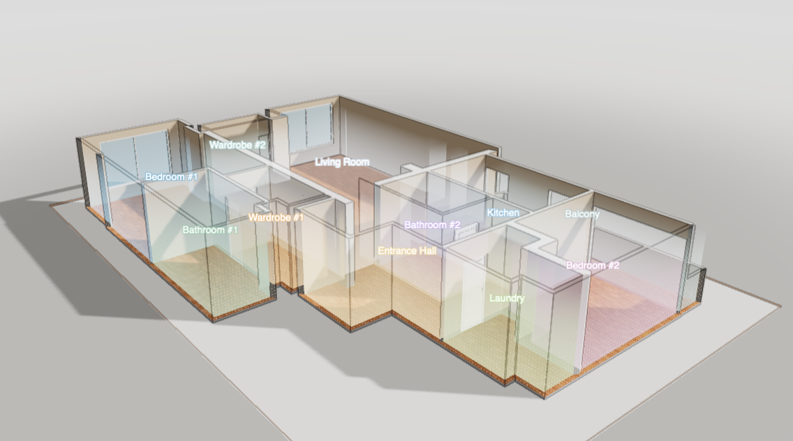
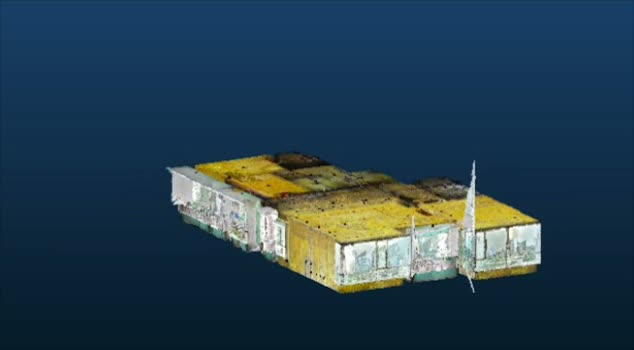

Одна задача
Разбираемся в процессе, собираем исходные данные и согласовываем ожидаемый результат.
Иван Метёлкин — системный инженер. Помогаю компаниям в строительстве, девелопменте, архитектуре и дизайне выстраивать процессы: от данных и расчётов до продукта и коммуникации с клиентом.
Посмотреть кейс



Каждый кейс — о том, как устроить работу так, чтобы решение было понятно и команде, и клиенту.
Проект в недвижимости объединяет разных специалистов. Результат зависит от того, как связаны их действия, данные и решения.
Разбираемся в процессе, собираем исходные данные и согласовываем ожидаемый результат.
Готовлю решение и инструменты, проверяю их на реальных проектах и дорабатываю.
Помогаю внедрить процесс, обучить участников и учитываю обратную связь после запуска.
Я Иван Метёлкин, системный инженер. Помогаю увидеть задачу целиком и довести решение до применения в работе.
Работаю с данными, расчётами, документами и коммуникацией. Использую цифровые инструменты и AI там, где они помогают команде и клиенту. Мой фокус — не только разработать инструмент, но и настроить процесс вокруг него.
Напишите, какой процесс или задачу хотите разобрать. На первой встрече разберём ваш процесс, обсудим близкий пример и наметим первый шаг.